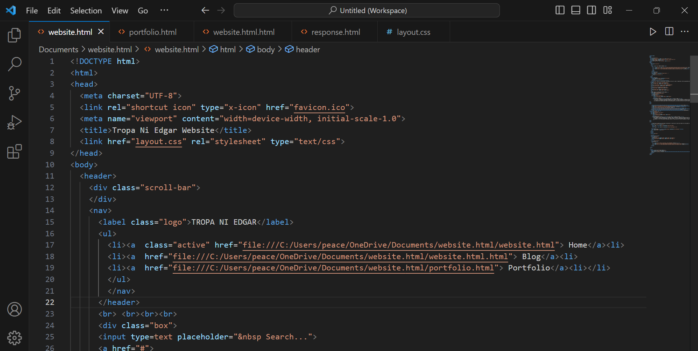
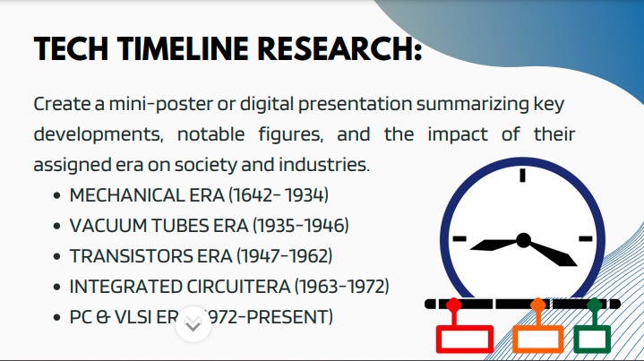
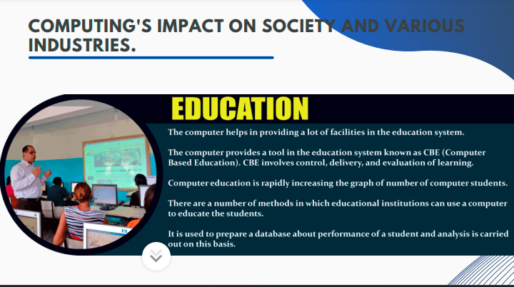
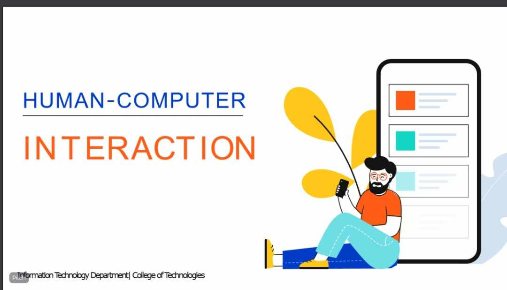

Highlight
(Learnings in every lesson)

Making a HTML/CSS Website
Making a website challenge my skills, capabilities and learnings in HTML because I just learned it just a few months ago, but with hardwork and perserverance I coup up and learn the method of it. It challenge also my patience and got easily irritated LOL. Besides all of this challenges Im glad that I made my very first and wonderful website. :]
 
What I learned in IT111 Introduction to Computing. I was able to know the different eras of the technological systems which compost of 5 era's Mechanical Era, Vacuum Tubes Era, Transistors Era, Integrated Circuitera Era, PC & VLSI Era. Also, I was able to know the computing's impact in various industries such as business, education, marketing, communication and more. In addition, I was also able to learn about the different professions in the Information Technology Field such as programmers, web developers, software developers, software engineers and many others. The highlight of what I learned in this subject is I was able to know how to create a website using HTML language and by the use of Visual Studio Code app.

What I learned in IT 113 IT FUNDAMENTAL. I was able to know how Human and Computer interaction works and how does technologies can be addictive to the users, this can also make them feel embarrassed or even lost of excitement about the website depends on how the website has and it's design. The highlights of this lesson that I will always remember will be on how to deal with your website according to the specific users that you want to use to the website you are making and it should also have a good quality of design that won't make your website bored and too much colors of your website because this could lead to the user's interest on your website lost because of its design and also by making sure that the button should be a user friendly not that hard to understand is one of the best website that I should make to make any user comfortable whenever they use the website that I created and also this made the biggest challenged that I encountered on my previous majors because I'm new on making a website but still I'm doing my best to cope up and make a good website that the users will love
What I learned from this lesson is the different eras of the technology which is composed of 5 era's. I was able to know how the technology helps in our society. How useful the technology to us. I also learned about the different professions of the information technology field such as programmers and also web developers.